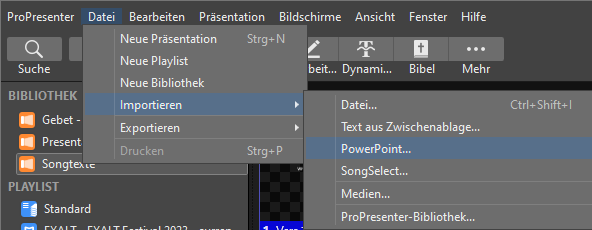
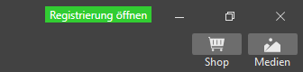

Import via Datei -> Importieren ->
PowerPoint…
Alle Folien werden als Bilder importiert,
Animationen werden nicht übernommen!
Bilder und Videos welche als Hauptinhalt gezeigt werden sind im
Ordner …\Foreground zu speichern. ( Im Explorer an
Schnellzugriff angeheftet. ) Die Dateien werden dann automatisch in
ProPresenter im Fenster Medien\Foreground
angezeigt.
Der Bereich Medien lässt sich oben rechts ein- und
ausblenden, siehe Bild.

Bilder und Videos welche als Hintergrund gezeigt werden sind unter dem Dateipfad …\ProPresenter7\Media zu speichern. Die Dateien werden dann automatisch in ProPresenter im Fenster Medien>Background angezeigt.
TBD